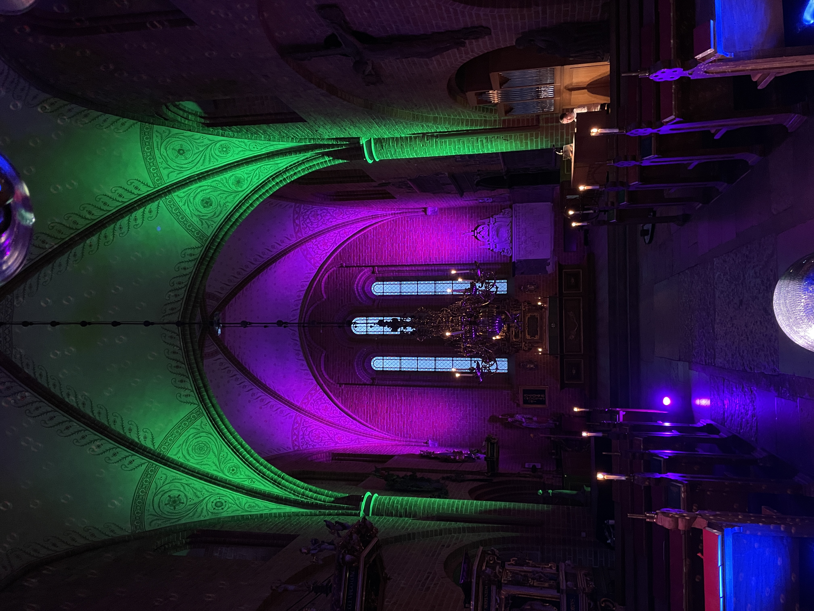
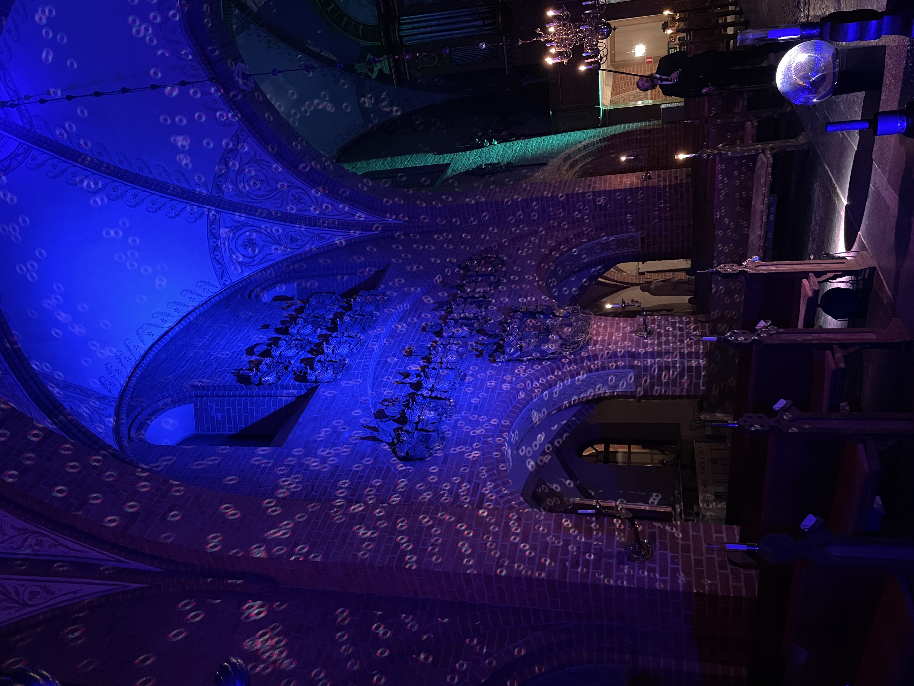
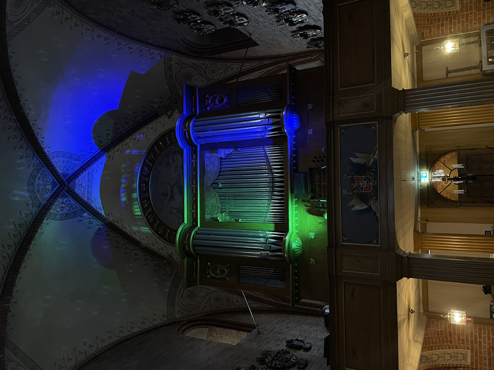
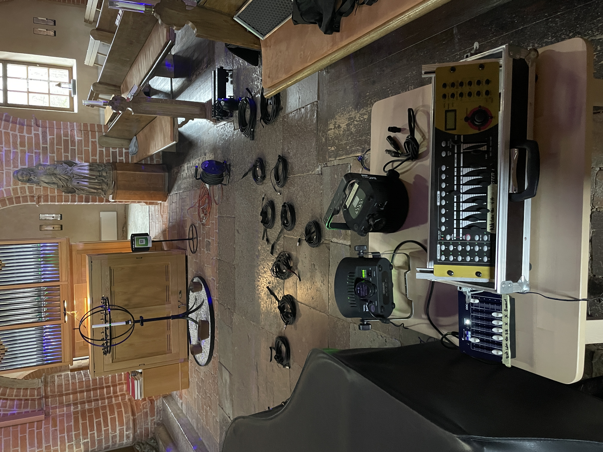
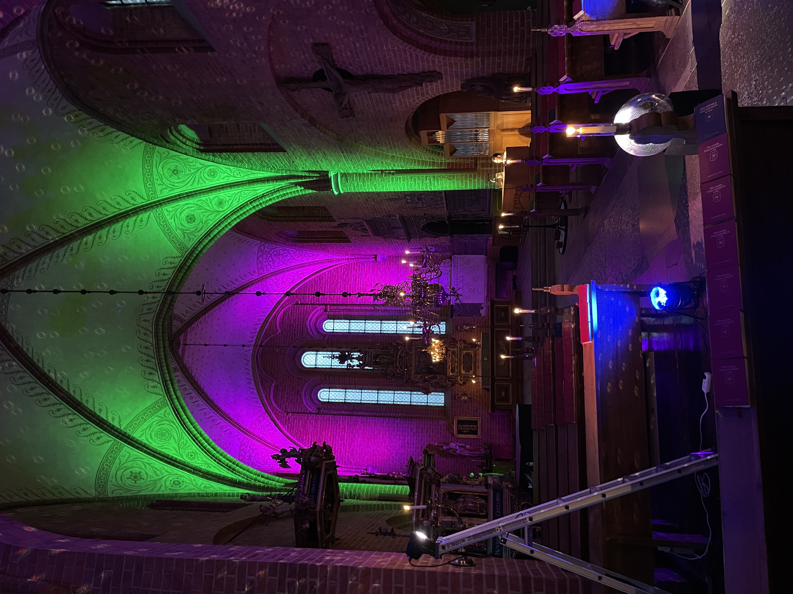
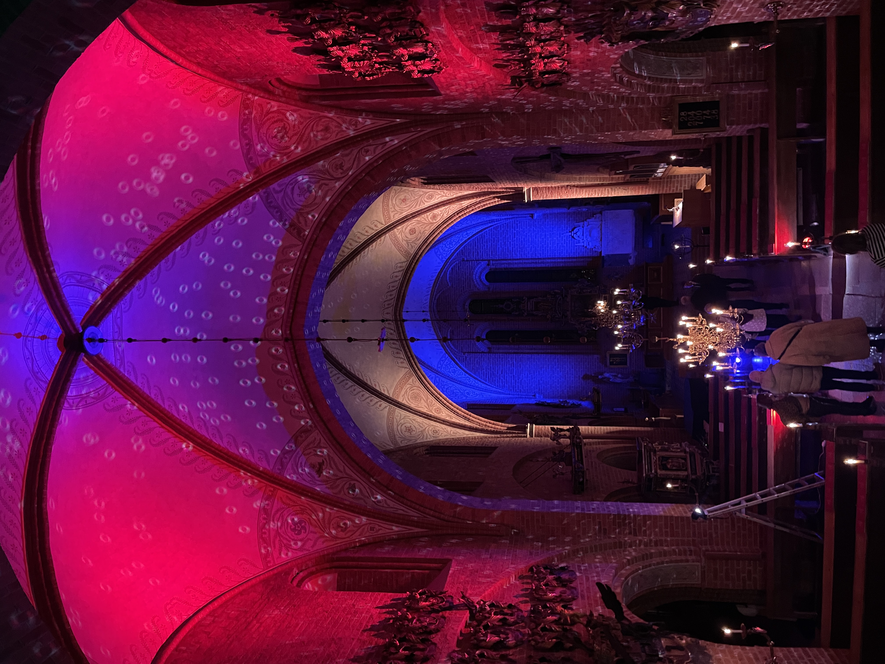

PROJECT / EVENT / 2025
Light Design — Organ Concert
For an organ concert in Skokloster, I worked with light to create an atmosphere that complemented the music and the historic space. A large disco ball was used as the central lighting element, catching the light and scattering reflections across the surrounding walls and ceiling. As the light moved across the surface of the disco ball, it created constantly shifting patterns and movements within the space, turning the architecture itself into part of the visual experience. The aim was to create something immersive and unexpected while allowing the music and the character of the venue to remain at the centre.
- Year
- 2025
- Client
- Svenska kyrkan
- Role
- Lighting technician
- Location
- Skokloster, Sweden






